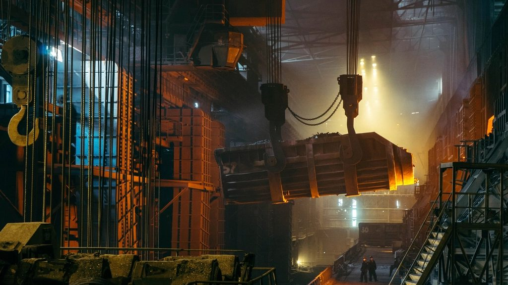
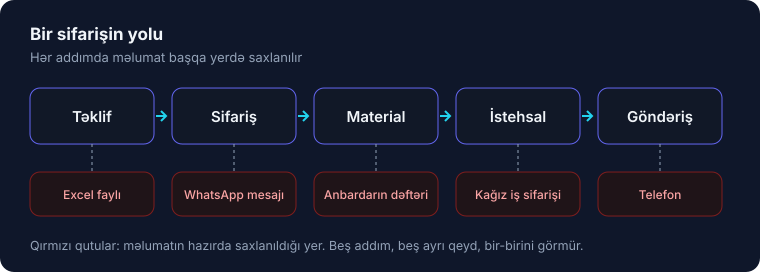
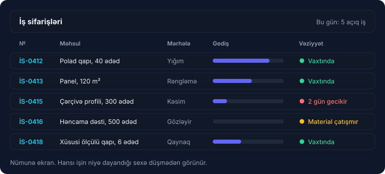
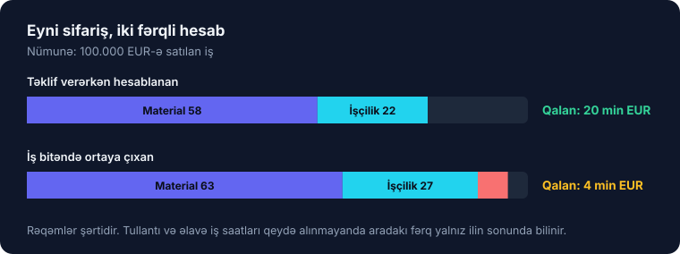

İstehsalın idarə edilməsi proqramı nə vaxt zəruri olur?
İstehsalla məşğul olan şirkətlərin çoxu işə Excel, kağız iş sifarişi və bir WhatsApp qrupu ilə başlayır. Beş-on sifariş olanda bu qaydanın qüsuru yoxdur, hamı nəyin harada olduğunu bilir. Sifarişlərin sayı otuza, qırxa çatanda isə eyni qayda hər gün bir az pul itirməyə başlayır və bu itkini heç kim toplayıb qarşınıza qoymur.

Sexdə tanış səhnələr
Gəzdiyimiz istehsal müəssisələrində eyni səhnələri dönə-dönə görürük. Müştəri zəng edib sifarişini soruşur, satışdakı əməkdaş "baxım, sizə zəng edərəm" deyib sexə düşür. Cümə axşamı göndəriləcək qapıların həncamaları çərşənbə axşamı qurtarıb, heç kim fərqinə varmayıb. Kəsimdə zay çıxan hissələr bir küncə yığılıb, amma neçə dənə olduğu heç yerə yazılmayıb.
Planı da adətən bir nəfər bilir, çox vaxt istehsalat müdiri və ya ən təcrübəli usta. O adam bir həftə məzuniyyətə çıxanda işlər gedir, amma yavaşlayır, çünki hansı işin qabağa çəkiləcəyinə qərar verən başqa heç kim yoxdur.
Bir də qiymət məsələsi var. "Bu qapıdan nə qədər qazanırıq?" deyə soruşanda əksər şirkətlərdə cavab keçən ilin qiyməti və üstünə gələn artımdır. Real maya dəyərini hesablamaq üçün lazım olan məlumat, yəni neçə saat iş getdiyi və nə qədər materialın tullantıya çıxdığı heç vaxt toplanmayıb.

Bunun hesabını kim ödəyir?
Bu problemlərin heç biri təklikdə şirkəti çətinə salmır. Zərər hamısı bir yerdə baş verəndə yığılır.
Gecikən təhvil
Gec gedən sifariş üçün bəzən cərimə ödəyirsiniz, bəzən endirim edirsiniz. Daha böyük itki sonra gəlir: müştəri növbəti işini verdiyi tarixə əməl edən başqa şirkətə verir və bunu sizə demir.
Anbarda yatan pul
Hansı materialdan nə vaxt, nə qədər lazım olacağı bilinməyəndə satınalma hisslə edilir. Nəticədə anbarda altı aylıq təbəqə metal durur, amma sabahkı iş üçün lazım olan vint yoxdur. Xətt dayanır, vint şəhərdəki ilk təsərrüfat mağazasından qiymət danışmadan alınır.
Yazılmayan tullantı
Zay olub atılan hissə qeydə alınmırsa, problemin hansı dəzgahda və ya hansı növbədə olduğunu bilə bilməzsiniz. Ayın sonunda materialın azaldığını görürsünüz, səbəbini isə tapa bilmirsiniz.
Hər şeyin sizdən soruşulması
Məlumat sistemdə olmadığı üçün ən xırda qərar da sahibkara və ya müdirə gəlir. Şirkət həmin bir-iki adamın bir günə sığışdıra bildiyi qədər böyüyür.
Proqram burada nə işə yarayır?
İstehsalın idarə edilməsi proqramı dediyimiz şey yuxarıdakı məlumatları bir yerdə toplayan uçot qaydasıdır. Markası və ekranı dəyişir, amma gördüyü işlər təxminən eynidir.
Sifariş təsdiqlənəndə sistem onu iş sifarişinə çevirir. İş sifarişində hansı materialdan nə qədər gedəcəyi, hansı əməliyyatlardan hansı ardıcıllıqla keçəcəyi və nə vaxt təhvil veriləcəyi yazılır. Bu məlumat bir dəfə daxil edilir, sonra kağıza və ya mesaja yenidən yazılmır.
Operator işə başlayanda və bitirəndə planşetdən və ya barkod oxuyucudan qeyd düşür. Neçə ədəd çıxıb, neçəsi zaydır, dəzgah niyə dayanıb: hamısı elə o an sistemə daxil olur. Axşam kiminsə formaları yığıb Excel-ə köçürməsinə ehtiyac qalmır.

Açıq iş sifarişləri bəlli olduğu üçün material tələbatı da özü çıxır. Həncamanın çərşənbə axşamı qurtaracağını sistem bir həftə əvvəl göstərir, satınalma da ona görə sifariş verir.
Planlaşdırmada hansı dəzgahın və hansı briqadanın hansı gün dolu olduğu bir ekranda görünür. Yeni sifariş gələndə təhvil tarixini bu ekrana baxıb deyirsiniz.
Nəhayət, maya dəyəri. Sərf olunan material, keçən vaxt və tullantı iş sifarişinə yazıldığı üçün hər sifarişin sizə neçəyə başa gəldiyini görürsünüz. Aşağıdakı nümunə şişirdilmiş görünə bilər, amma tullantının və əlavə iş saatlarının heç qeydə alınmadığı şirkətlərdə bu boyda fərqlər çıxır.

"Bizim iş fərqlidir, proqrama sığmaz"
Bunu demək olar ki, hər görüşdə eşidirik və əsassız etiraz saymırıq. Sifarişlə istehsal edən şirkətdə hər iş o birindən fərqlidir. Seriyalı istehsalda əsas dərd sürətdir. Müştərinin materialı ilə işləyən sexdə material müştərinindir, anbar uçotu tamam başqa cür aparılır. Hazır paketi alıb heç toxunmadan quranda bu fərqlərə görə sistem istifadə olunmaz hala düşür.
Ona görə biz işə proqramdan başlamırıq. Əvvəlcə şirkətdə bir sifarişin necə getdiyini aydınlaşdırırıq, sonra sistemi həmin axına görə qururuq. İşçilər "proqram belə istəyir" deyə iş üsulunu dəyişməyə məcbur qalırsa, qurulmada nəsə səhv gedib.
Excel nə vaxt kifayət etmir?
Üç nəfərlik sexin ilk gündən istehsal proqramına ehtiyacı yoxdur. Gördüyümüzə görə, bu hallardan biri başlayanda Excel işi daşıya bilmir:
- Eyni vaxtda gedən işlərin sayı bir adamın yadında saxlaya biləcəyindən çoxdursa.
- Məhsul bir neçə mərhələdən keçirsə və mərhələlər arasında gözləyirsə.
- Keçən ay neçə sifarişin gec getdiyini bilmirsinizsə.
- Material çatışmazlığı üzündən ayda bir neçə dəfə iş dayanırsa.
- İkinci növbə, ikinci sex və ya yeni məhsul qrupu gündəmdədirsə.
Hansı proqram?
Seçim çoxdur: geniş əhatəli ERP sistemləri var, yalnız istehsal sexinə baxan MES həlləri var, sahəyə xüsusi paketlər var, bir də şirkətə xüsusi yazılan tətbiqlər var. Hansının uyğun olduğu şirkətin ölçüsündən və nə istehsal etməsindən asılıdır.
Biz konkret bir məhsulu satmağa çalışmırıq. Bəzi şirkətlərdə uyğunlaşdırılmış ERP qurmuşuq, bəzilərində sexə xüsusi sadə tətbiq yazmışıq. Təcrübəmiz bunu göstərir: baha, amma şirkətə uyğun gəlməyən sistem ucuz, amma yaxşı qurulmuş sistemdən az fayda verir.
Haradan başlamalı?
İlk iş olaraq bir sifarişi əvvəldən axıra izləyin. Təklif harada yazıldı, sifariş sexə necə çatdırıldı, material necə istənildi, göndəriş barədə necə xəbər verildi? Məlumatın kağıza, mesaja və ya kiminsə yaddaşına keçdiyi hər nöqtəni qeyd edin. Əksər şirkətlərdə bu siyahı bir səhifə tutur.
Sonra siyahıdan sizi ən çox incidən tək bir bəndi seçin. Adətən bu ya iş sifarişlərinin izlənməsi, ya da material tələbatı olur. Hər şeyi eyni vaxtda düzəltməyə çalışan layihələr yarımçıq qalır.
Seçdiyiniz mövzunu əvvəlcə bir xətdə və ya bir məhsul qrupunda sınayın. Komanda sistemə etibar etməyə başlayandan sonra planlaşdırmanı, maya dəyərini və keyfiyyəti növbə ilə əlavə edərsiniz.
Tez-tez verilən suallar
Kiçik sex üçün də lazımdır?
Beş nəfərlik sexdə belə sifarişlərin və materialın uçotunu qaydaya salmaq fayda verir. Bu miqyasda böyük sistem lazım deyil, işə uyğun qurulmuş sadə bir qayda kifayətdir.
Ustalar və operatorlar istifadə edəcəkmi?
Ekran sadədirsə, edəcəklər. Operatordan çox vaxt iki toxunuş tələb olunur: işi başlat, işi bitir. İstifadə olunmayan sistemlərdə adətən sexdəki adama əlavə iş yüklənib, amma əvəzində onun işini asanlaşdıran heç nə verilməyib.
Qurulması nə qədər çəkir?
Həcmdən asılıdır. Təkcə iş sifarişlərinin izlənməsini işə salmaq bir neçə həftə çəkir. Planlaşdırmanı, maya dəyərini və keyfiyyəti də əhatə edən sistem bir neçə ay aparır. Biz ilk faydanın tez görünməsi üçün mərhələ-mərhələ getməyə üstünlük veririk.
Mövcud mühasibat proqramımızla birlikdə işləyəcəkmi?
Əksər hallarda işləyir. İstehsal sistemini istifadə etdiyiniz mühasibat proqramına məlumat ötürəcək şəkildə qurmaq olur. Mühasibat proqramını dəyişməyə ehtiyac yoxdur.
Əlaqəli xidmətlərimiz: istehsal şirkətləri üçün ERP və istehsalın izlənməsi, kiçik və orta biznes üçün ERP həlləri, prefabrik istehsalının izlənməsi keysi.
Dəzgahlarınız gücünün nə qədərindən istifadə edir?
Planlı vaxt, dayanma və istehsal sayından OEE-ni və itkinin ən çox haradan gəldiyini hesablayın.
Kalkulyatoru açİstehsal planı və güc şablonu
Hər dəzgah üzrə gündəlik güc, sifarişlərin bitmə günü və təhvil tarixini qaçıracaq işlər. Pulsuz Excel şablonu.
Şablonlara baxİstehsalınıza birlikdə baxaq
Bir sifarişinizin yolunu birlikdə çıxaraq, harada ilişdiyini görək.
Layihənizi müzakirə edək